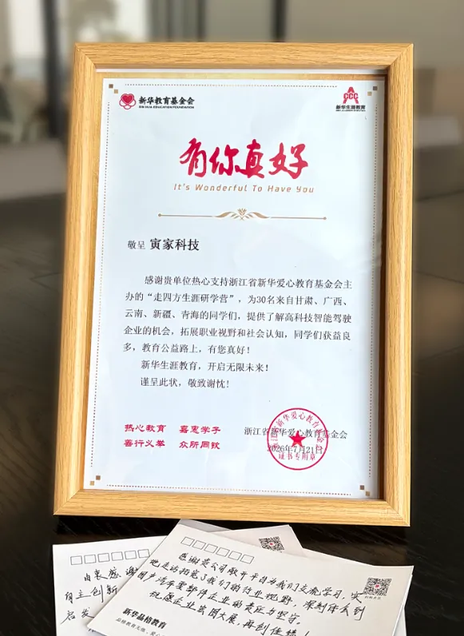
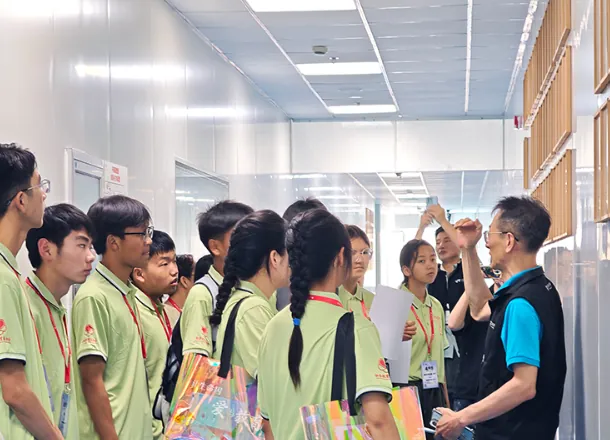
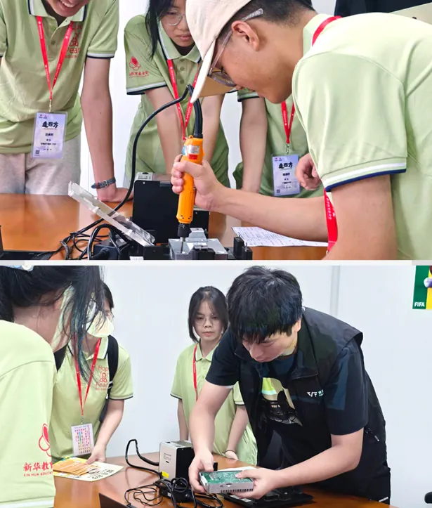
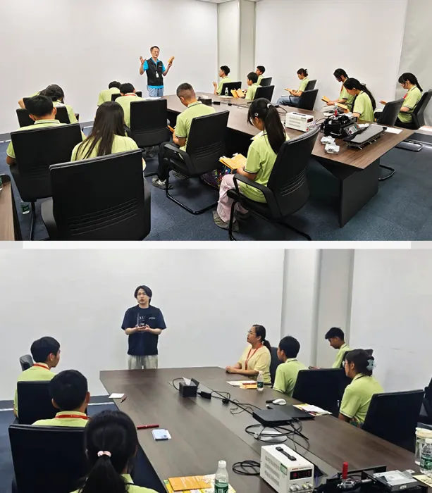
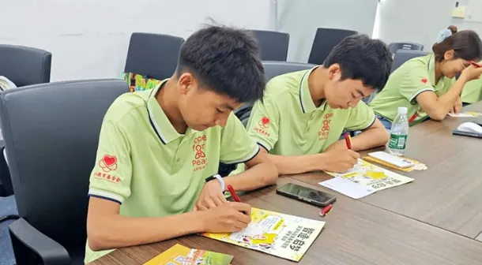
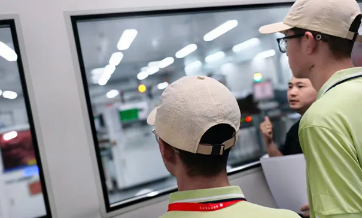

盛夏清风，载梦而来珍珠少年，踏约而至
7月21日
在寅家科技位于嘉兴平湖的智造基地少年壮志邂逅科创之光
智行向新，启梦未来

你听过"珍珠生"吗?
他们是来自偏远地区品学兼优、积极向上的学子就像贝壳里的沙粒，
经历过磨砺淬炼出独特的青春光泽
由浙江省新华爱心教育基金会发起
与各地政府及教育部门合作的"捡回珍珠计划"
致力于为更多学子打开一扇窗
通过学业与生活支持、品格教育生涯教育、心理健康等全方位陪伴珍珠生健康成长
让每一个梦想都不被辜负

7月21日上午，研学活动开启
来自青海、甘肃、广西、河南、新疆等地的30多名“珍珠生”
来到寅家科技嘉兴智造基地
正值高中的他们
以“青春智造营大闯关”的形式
零距离体验科创魅力
第一关：专利寻宝
感受“全栈自研"
寅家集团专利墙前，趣味挑战正式启动
由队长指定目标专利
同学们在上百份专利证书中搜寻打卡。
找到目标专利后
寅家工程师现场拆解技术原理
结合落地场景细致讲解
两百余项自主知识产权专利
沉淀着寅家深耕原创科技的坚持让同学们真切感知:创新并非遥不可及
前沿技术正悄然改变日常出行与生活

第二关：我是工程师
体验智造
研学队伍走进真实产线与专业实验室振动试验机、恒温恒湿试验箱依次亮相
工程师娓娓解读每一道工艺背后的技术逻辑
同学们亲手拧螺丝、接线束
近距离触摸域控制器读懂这块智能硬件如何充当智能汽车的“大脑”
支撑智能辅助泊车等功能做出精准决策
如同珍珠需要被打磨应用到实际场景中
每一个零件都必须经历“千锤百炼”
历经多项检验后，才能承担“大任”

第三关：智启梦想
职场对话
整场研学最温暖走心的环节如约而至:
寅家队长化身学长学姐
分享各自求学之路与职场成长故事:
有人扎根基层持续沉淀
有人勇于跨界突破自我
寅家始终向心怀热爱、追求成长的青年
敞开机会大门
一段段真实鲜活的经历深深感染了“珍珠生”
让大家明白:人生没有白走的路
锚定目标、稳步前行，终能奔赴心中远方

第四关：未来心愿贴
播种心愿
研学旅程步入尾声
同学们提笔在心愿贴上记录收获
写下对未来的期许
静待时光浇灌，终有一日
此番相遇，在少年心底种下科创梦想的种子
这些心愿将乘风起航，飞向广阔长空

来自"珍珠"的声音
"珍珠生"1号:
在此次对寅家科技的参访中，我不仅亲眼目睹了车载仪器的先进技术和精密制造过程，而且深刻体会到了一家科技公司为保障人们出行安全所做出的巨大努力与贡献。在参观过程中，我被企业展示的一系列创新产品所吸引，比如具有夜视功能的摄像头、智能导航系统以及能够实时监测车辆状态的传感器。这些技术的集成不仅大大提高了驾驶的安全性，也为未来的智能交通系统打下了坚实的基础。此外，我也深刻体会到了科技与人类生活的密切联系，科技的进步不仅改变了我们的工作方式，也在不断地改善我们的生活质量。
"珍珠生"2号:
科技创新不仅仅是单一的研发，是由多个部分组成，形成一个统一的大整体。每一小块看似不起眼的研发背后都是数于百位科研人员日夜兼程，风雨无阻，披星戴月地研究。在参访的过程中，我深刻的感觉到了科技不仅仅是一句放在口头的新兴时代标志词，更是一股服务人民、落地生活、改变时代的力量，它引领时代，它发展未来。它是未来发展的大趋势，亦是人民幸福生活的保障。但与此同时，却需要有极强的耐心、热爱和钻研精神，一遍一遍枯燥又乏味的重复实验，创新、发展。寅家工作人员耐心地为我们讲解前沿科技知识，兴趣科普、行业发展现状，向我们分享他们的故事，让我懂得了热门和热爱并非得二中择一。他们毫无保留的分享讲解，让我走出了课本，开阔了眼界，真切感受到了科技创新时代的魅力。确切感受到了科创企业和科创氛围。激发了我内心对未来幻想的种子。
寅家，不止是科技公司
更想成为"有温度"的同行者
“好的技术不应该只存在于实验室和工厂里
它更应该走进年轻人的眼睛里变成好奇和向往"
寅家聚焦智能感知、智能决策与控制技术量产解决方案
致力于多领域通用智能体的规模化应用
但我们深知--真正让一家企业走远的
不是技术多酷炫
而是技术背后有没有对人的关怀

我们相信
每一颗珍珠都值得被拾起
每一个梦想都值得被托举
扶持年轻人看见科技、走近科技、成为科技的一部分
这是寅家集团愿意长期做下去的事